#This script assume that the Java GUI is already running. #This script is meant to run after nav_ports assuming the right boards and port is already select #This script will run delete the input mux base on muxName #Input: muxName = [InputMux001 .. InputMux100] If muxName is not given, it will delete the first input mux in the list #Input: muxPosition = [1..] will delete the input mux base on its position on the list. If set to all, it will delete all input muxes #Usage: delete_input_mux.sikuli muxName=InputMux1 muxAddr=2xx.xxx.xx.x muxPort=xxxx bulkNum=10 octetIncrement=1 ############################################################### #common code for every sikuli code. Do not remove this section from me7klib import * ############################################################### #YOUR code start here ############################################################### #This is your check for the inputs that you are expecting. def Check_args(): #checking for required arguments pass Check_args() ############################################################ #Main program definitions code start from this point #Any global variables here mymux = Get_arg('muxName') mypos = Get_arg('muxPosition') inputmuxNameDict = { 'InputMux001':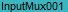, 'InputMux002':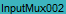, 'InputMux003':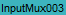, 'InputMux004':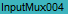, 'InputMux005':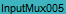, 'InputMux006':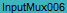, 'InputMux007':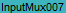, 'InputMux008':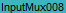, 'InputMux009':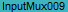, 'InputMux010':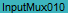, 'InputMux_1':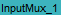, 'InputMux_2':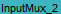, 'InputMux_3':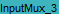, 'InputMux_4':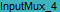, 'InputMux_5':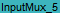, 'InputMux_6':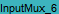, 'InputMux_7':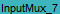, 'InputMux_8':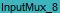, 'InputMux_9':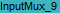, 'InputMux_10':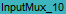 } def Delete_By_Name(): if mymux: find(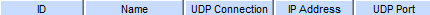) if inputmuxNameDict.has_key(mymux): mymuximage = inputmuxNameDict.get(mymux) if exists(Pattern(mymuximage).exact()): rightClick(Pattern(mymuximage).exact()); wait(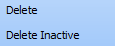); click(Pattern().targetOffset(-36,-13)) #Now apply if exists(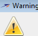): find(); click(Pattern().targetOffset(-25,0)) RunSikuli(apply_changes) else: Exit_program('muxName not found: ' + mymux, 2) else: Exit_program('Invalid muxName entered: ' + mymux, 2) ####################################################### #Main program flow Delete_By_Name()